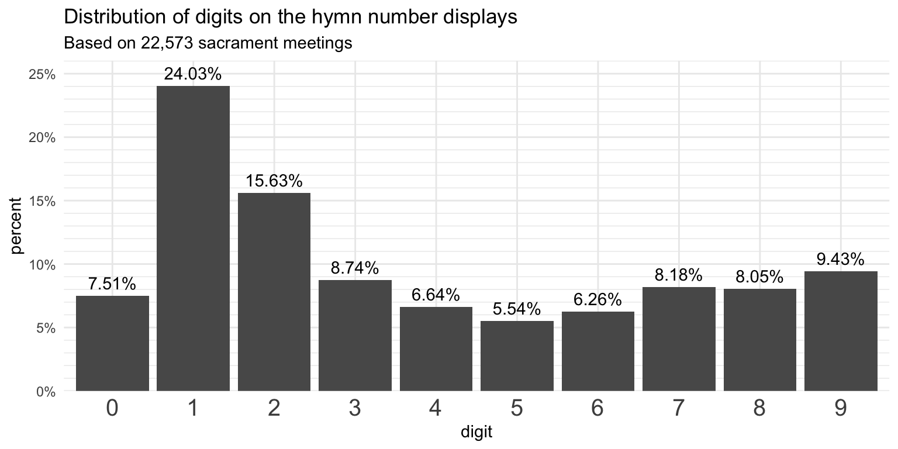
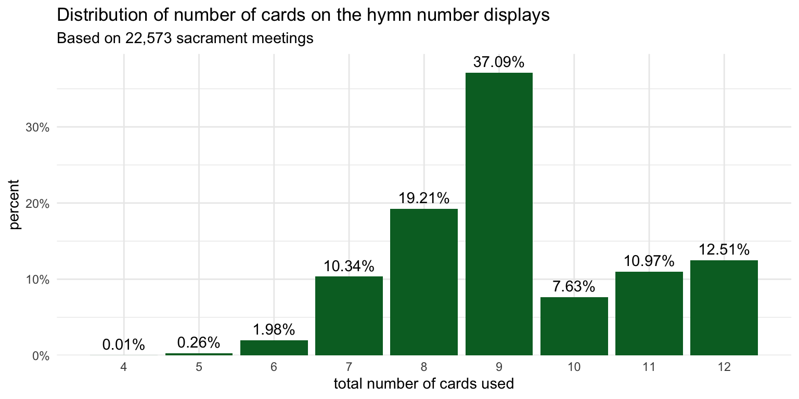

| digit | percent |
|---|---|
| 0 | 7.51% |
| 1 | 24.03% |
| 2 | 15.63% |
| 3 | 8.74% |
| 4 | 6.64% |
| 5 | 5.54% |
| 6 | 6.26% |
| 7 | 8.18% |
| 8 | 8.05% |
| 9 | 9.43% |
How many of each card shhould a ward have?
frequency
I’ve never had a calling where I was the one to put the cards on the display to show the hymn numbers. I also have no idea how many of each card is in a pack you get from Distribution. But, with the data I have, I can now provide some recommendations on how many of each digit a pack of cards has because have a pretty good idea of how many cards wards have had to use. So, let’s take a look at what we can learn. This post is based on data from 22,573 wards.
First, let’s take a look at the distribution of numbers across all the hymns in these sacrament meetings. This table shows what percentage of the cards displayed belonged to each number.
It shouldn’t come as too much of a surprise that the most common digit is 1. After all, the sacrament hymns all include at least one of them. I guess what’s surprising is just how much more common it is. It’s almost five times as common as 5 for some reason. We can plot these numbers. Here’s a plot to show these visually, which highlights the difference between them.

So now what we can do is rather than look at all the data at once, we could look at each sacrament meeting individually. If a quarter of the cards used are 1s, and the most number of cards used on a typical sacrament meeting is twelve (four hymns, each with three digits), then about three of them are predicted to be 1s. Let’s see what the data actually shows though.
First off, the following plot shows the distribution how many cards are used each week. About 37% of meetings have nine digits on display. You’d see this if you didn’t sing an intermediate hymn and all three hymns that were sung were hymn 100–341. Another 19% have eight digits, which would mean one of the three hymns is between 11 and 99. Just a few wards only displayed five digits, which happens when the opening and closing hymn are between 1 and 9 and a typical sacrament hymn.

The plot above shows that, once in a very great while, you might see a sacrament meeting with only four cards used. This happened twice in my dataset. Both from the same ward in American Fork in March 2021. On one week, they sang
Maybe do like 95 percentile?
Another